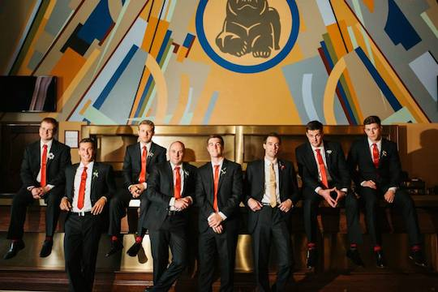

Hi, my name is Matt Didier. I signed up for Dev Bootcamp to learn how to code. I am really excited to get into programming.
Photo of the Week
I got married on June 15, 2013 in St.Louis, Missouri. Here are some wedding pictures.
Random Pics
I went to Purdue University and I love to go skiing at Whistler.
Inside the Kitchen
Smells Like Bakin’ started out in the garage of the husband wife duo Allison & Joseph. Allison is the baker, and Joseph found a way for them to make a business out of her tasty treats. Flash forward to today and they have a successful store front, catering business and cupcake truck.
Get Bakin’ with Us
Call us: 1-800-CUP-CAKE
Email us: bakeon@smellslikebakin.com
We announce all of our new flavors first through Facebook & Twitter, and even take requests!


© 2012 Smells Like Bakin' Cupcake Company. All Rights Reserved.